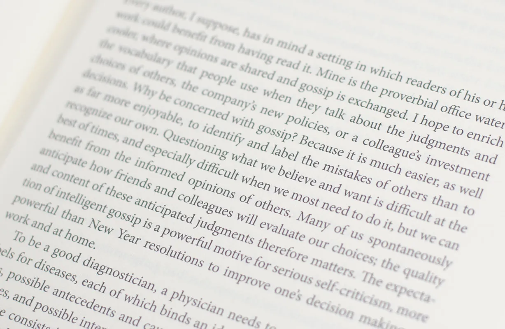

|  |
$11.29 |
Thinking, Fast and Slow
Daniel Kahneman
In the highly anticipated Thinking, Fast and Slow, Kahneman takes us on a groundbreaking tour of the mind and explains the two systems that drive the way we think. System 1 is fast, intuitive, and emotional; System 2 is slower, more deliberative, and more logical. Kahneman exposes the extraordinary capabilities—and also the faults and biases—of fast thinking, and reveals the pervasive influence of intuitive impressions on our thoughts and behavior. The impact of loss aversion and overconfidence on corporate strategies, the difficulties of predicting what will make us happy in the future, the challenges of properly framing risks at work and at home, the profound effect of cognitive biases on everything from playing the stock market to planning the next vacation—each of these can be understood only by knowing how the two systems work together to shape our judgments and decisions.
Engaging the reader in a lively conversation about how we think, Kahneman reveals where we can and cannot trust our intuitions and how we can tap into the benefits of slow thinking. He offers practical and enlightening insights into how choices are made in both our business and our personal lives—and how we can use different techniques to guard against the mental glitches that often get us into trouble. Thinking, Fast and Slow will transform the way you think about thinking.
This edition
| Format | 499 pages, Paperback |
|---|---|
| Published | April 2, 2013 by Farrar, Straus and Giroux |
| ISBN | 9780374533557 (ISBN10: 0374533555) |
| Language | English |